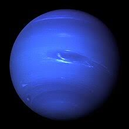

كوكب نبتون
نبتون هو ثامن كوكب في المجموعة الشمسية ويتميز بلونه الأزرق العميق نتيجة لوجود غاز الميثان في غلافه الجوي. نبتون هو الكوكب الأبعد عن الشمس.

حقائق عن نبتون
- المسافة من الشمس: حوالي 4.5 مليار كيلومتر
- القطر: حوالي 49,244 كيلومتر
- المدة الزمنية لدوران حول الشمس: حوالي 165 سنة أرضية
- درجة الحرارة: تصل إلى -214 درجة مئوية
النظام الشمسي